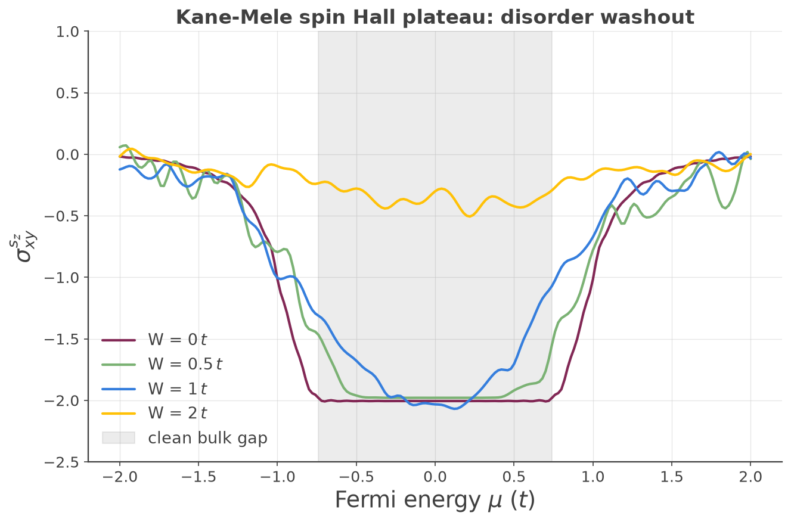

Custom Vertex Operators (Spin Hall Effect)
Custom vertex operators: building arbitrary linear-response functions¶
KITE's built-in transport methods (conductivity_dc,
conductivity_optical) compute specific correlators of the
velocity operator. But the underlying Kernel Polynomial machinery is far more general: any two-point response
function built from a Kubo-Bastin double trace can be evaluated with the same double-Chebyshev expansion,
provided you can express the two operators entering the correlator. kite.custom.Vertex together
with custom_two() exposes exactly this — letting you assemble arbitrary
operators and compute their Kubo-Bastin correlator directly.
The general mechanism¶
A kite.custom.Vertex is a weighted sum of products of elementary operators, specified as a list
[[coeff, "opstring"], ...]. Each opstring is a dot-separated product of building blocks — velocity
components ("vx", "vy"), position components ("rx", "ry"), and
user-defined orbital-space matrices ("l0", ...) registered via
add_orbital_coupling(). Operator strings apply right-to-left:
"vx.l0" means \(\hat v_x\,\hat L\), with \(\hat L\) acting first. For example the symmetrized spin
current \(\tfrac12\{\hat v_x,\hat s_z\}\) is written
which is why both orderings appear. custom_two() takes two independently defined vertices \(A\) and
\(B\) and computes the double-Chebyshev moment matrix
evaluated stochastically over random vectors and disorder realizations: a random vector seeds one factor;
\(A\) is applied to it; \(T_n(\hat H)\) is generated by the Chebyshev recursion and \(B\) applied to produce the
"right" family; \(T_m(\hat H)\) acting on the plain random vector produces the "left" family; the inner product
of the two families gives \(\Gamma_{mn}\). num_moments must be even (enforced by the code).
From moments to a transport coefficient: the Kubo-Bastin integral¶
\(\Gamma_{mn}\) is a matrix of numbers, not yet a conductivity. The conversion is the numerical implementation of
the Kubo-Bastin formula1, done in Python (examples/cond_sum.py, adapted for spin in
examples/kane_mele_spin_hall_process.py). In the KPM representation, both the spectral operator
\(\delta(E-\hat H)\) and the Green's-function derivative \(dG^{\pm}/dE\) entering the Kubo-Bastin integral are
expanded in Chebyshev polynomials of \(\hat H\); substituting these expansions turns the trace into a
contraction of the precomputed moment matrix with two energy-dependent coefficient vectors,
where \(\Delta_m(E)\) reconstructs \(\delta(E-\hat H)\) and \([dG/dE]_n(E)\) reconstructs \(dG^{+}/dE\). The Fermi-weighted energy integral \(\int dE\, f(E)\,X(E)\) then gives \(\sigma_{AB}(\mu)\) as a function of Fermi energy, by quadrature. Because \(\Gamma_{mn}\) is computed once by KITEx, sweeping temperature, \(\mu\), and the reconstruction broadening is a cheap post-processing step — no re-run of KITEx needed.
Which part of \(Z(E)\) is physical: a general rule, not a spin-Hall-specific shortcut. Each raw stored
operator is \(X=i^{n_X}\hat X_H\) with \(\hat X_H\) Hermitian and \(n_X\) counting KITE's "missing factor of \(i\)" per
velocity token (the same convention as custom_one()'s vertex). \(\Gamma_{mn}\)
therefore picks up an overall \(i^p\), with \(p=n_A+n_B=\) NumVelocities the combined count from both
vertices. Since \(i^p\) has period 4, not 2, which component of \(Z(E)\) is physical depends on \(p\bmod4\), not
just its parity:
| \(p\bmod4\) | correct component |
|---|---|
| 0 | \(X(E)=-2\,\mathrm{Im}[Z(E)]\) |
| 1 | \(X(E)=+2\,\mathrm{Re}[Z(E)]\) |
| 2 | \(X(E)=+2\,\mathrm{Im}[Z(E)]\) |
| 3 | \(X(E)=-2\,\mathrm{Re}[Z(E)]\) |
The spin Hall walkthrough below has \(p=2\) (row 2), which is why its own post-processing script uses
\(\mathrm{Im}[Z]\) — that is a consequence of this general rule for this particular vertex pair, not a
special-cased formula. KITE-tools --CustomTwo applies this table automatically, reading
NumVelocities from the file; see --CustomTwo.
Why this generalizes conductivity¶
KITE's built-in conductivity_dc is the same trace with plain velocity
vertices — confirmed directly in Src/Tools/Gamma2D.cpp, which builds \(\Gamma_{mn}\) by applying
kpm0.Velocity(...) for one Cartesian direction and kpm1.Velocity(...) for the other, i.e.
\(A=\hat v_x\), \(B=\hat v_y\) directly — no anticommutator. The bare velocity operator is already the correct,
Hermitian charge-current operator in that direction, so no symmetrization is needed.
The anticommutator does appear once you replace one of the velocities with a genuinely different quantum-number operator (spin, orbital moment): \(\tfrac12\{\hat v_x,\hat s_z\}\) is the standard definition of a spin current — the object that represents "spin flowing in the \(x\) direction," which is a nontrivial physical construction distinct from either operator alone, and needs the symmetrized (anticommutator) form to stay Hermitian in general. Swapping the vertex is still what generalizes the calculation — it's just that different physical currents are built differently from the elementary operators:
| response | vertex \(A\) | vertex \(B\) |
|---|---|---|
charge Hall conductivity (conductivity_dc) |
\(\hat v_x\) | \(\hat v_y\) |
spin Hall (this page, via custom_two) |
\(\tfrac12\{\hat v_x,\hat s_z\}\) | \(\hat v_y\) |
| orbital Hall | \(\tfrac12\{\hat v_x,\hat L_z\}\) | \(\hat v_y\) |
| spin/orbital Edelstein | \(\hat s_z\) / \(\hat L_z\) (bare density) | \(\hat v_y\) |
The Kubo-Bastin trace machinery never changes — only the operators you feed it.
The Kane-Mele spin Hall walkthrough¶
The Kane-Mele model2 is the honeycomb-lattice \(\mathbb Z_2\) topological insulator: two time-reversed
copies of the Haldane model, one per spin, with the intrinsic (next-nearest-neighbor, complex) spin-orbit
hopping carrying opposite phase for the two spins. examples/kane_mele_spin_hall.py builds the
lattice with four sublattices — Aup, Bup, Adn, Bdn — where the up-spin block reproduces the
documented Haldane example exactly (NNN phase \(+i\) on A–A) and the down-spin block is its
complex conjugate (\(-i\) on A–A). Nearest-neighbor charge hopping is \(-t\) and spin-diagonal, with no spin-flip
term. Parameters: \(t=1\), \(t_2=0.15\), on a \(64\times64\) lattice with 256 moments.
The opposite SOC sign per spin is what distinguishes Kane-Mele (a \(\mathbb Z_2\) insulator with quantized spin Hall response and zero charge Hall response) from two stacked Haldane copies (a charge Chern insulator). Intrinsic SOC opens a bulk gap; each Dirac point acquires a mass \(3\sqrt3\,t_2\), so the full gap is
a plateau region \(|E|\lesssim 3\sqrt3\,t_2\approx 0.78\,t\).
Building \(s_z\). Because spin is encoded as the sublattice doubling (spin-up and spin-down live on separate sublattices with no hopping between them), the spin operator \(\hat s_z=\tfrac12\sigma_z\) is diagonal in the orbital basis, registered as \(+\tfrac12\) on the up sublattices and \(-\tfrac12\) on the down sublattices:
calculation.add_orbital_coupling('Aup', 'Aup', 0.5, 'l0')
calculation.add_orbital_coupling('Bup', 'Bup', 0.5, 'l0')
calculation.add_orbital_coupling('Adn', 'Adn', -0.5, 'l0')
calculation.add_orbital_coupling('Bdn', 'Bdn', -0.5, 'l0')
Every sublattice must be registered with add_orbital_index() — the
orbital operator is a full \(N_\text{orb}\times N_\text{orb}\) matrix, and registering only a subset would
silently truncate it. The two vertices are the symmetrized spin current \(A=\tfrac12\{\hat v_x,\hat s_z\}\) and
the charge velocity \(B=\hat v_y\).
Verified result. The Kubo-Bastin post-processing yields a genuinely flat plateau at
across the bulk gap (\(|E|\lesssim 0.74\,t\)), consistent with the expected quantized \(\mathbb Z_2\) spin Hall
value — the plateau's existence and flatness are the physics being demonstrated at this lattice size, not
a claim of an exact quantized integer. The overall sign of \(\sigma^{s_z}_{xy}\) is fixed by the arbitrary choice
of which spin is assigned \(+\tfrac12\) in the l0 matrix — flipping every l0 entry flips the sign of the
plateau; this is a genuine convention, not a physical ambiguity.
The disorder-washout extension¶
examples/kane_mele_spin_hall_disorder.py adds on-site (Anderson) disorder of uniform width \(W\) on
all four sublattices and sweeps \(W\). Physically, the \(\mathbb Z_2\) invariant — and hence the quantized plateau
— is protected as long as (i) the bulk mobility gap survives and (ii) time-reversal symmetry is preserved on
average. On-site potential disorder respects TRS, so for \(W\) well below the gap the plateau should be
essentially untouched; once \(W\) approaches and exceeds \(E_g\approx1.56\,t\), disorder broadening closes the
mobility gap and the plateau degrades.

Verified trend:
| \(W/t\) | behavior |
|---|---|
| \(0\) | flat plateau \(\approx -2.0\) |
| \(0.5\) | still flat (well below the gap) |
| \(1.0\) | visibly rounding (comparable to the gap) |
| \(2.0\) | washed out to \(\approx -0.4\) (well past the gap) |
Two implementation points worth flagging. First, the manual spectrum_range must bound the actual
spectrum including the disorder spread — a fixed clean-model range would let eigenvalues spill outside the
rescaled \([-1,1]\) Chebyshev domain and make \(T_m(\hat H)\) diverge exponentially. Second, this is a fast
qualitative demo (num_disorder_ = 1–3), so the large-\(W\) curves are legitimately noisy — small
wiggles there are stochastic, not physical structure.
Example
Get more familiar with KITE: run examples/kane_mele_spin_hall.py and its
disorder extension yourself, and try building a different vertex — spin
density instead of spin current gives the Edelstein response.
-
J. H. García, L. Covaci, and T. G. Rappoport, Phys. Rev. Lett. 114, 116602 (2015). ↩
-
C. L. Kane and E. J. Mele, Phys. Rev. Lett. 95, 226801 (2005). ↩